家具设计 Furniture Designer
设计师 THE DESIGNER
我设计为真实生活而存在的家具。每一件作品都从一个材料决定开始——一块板的厚度、一个接合、一道圆角——其余的一切都由此展开。 I design furniture for rooms that are lived in. Each piece begins with a single material decision — a board thickness, a joint, a radius — and everything else follows from it.
- 作品 Pieces
- 16
- 系列 Collections
- 06
- 联系方式 Contact
- +86 138 2874 8722
客厅
Living Room座椅、几案与收纳，被构想为一个完整的构图。 Seating, tables and storage conceived as a single composition.
07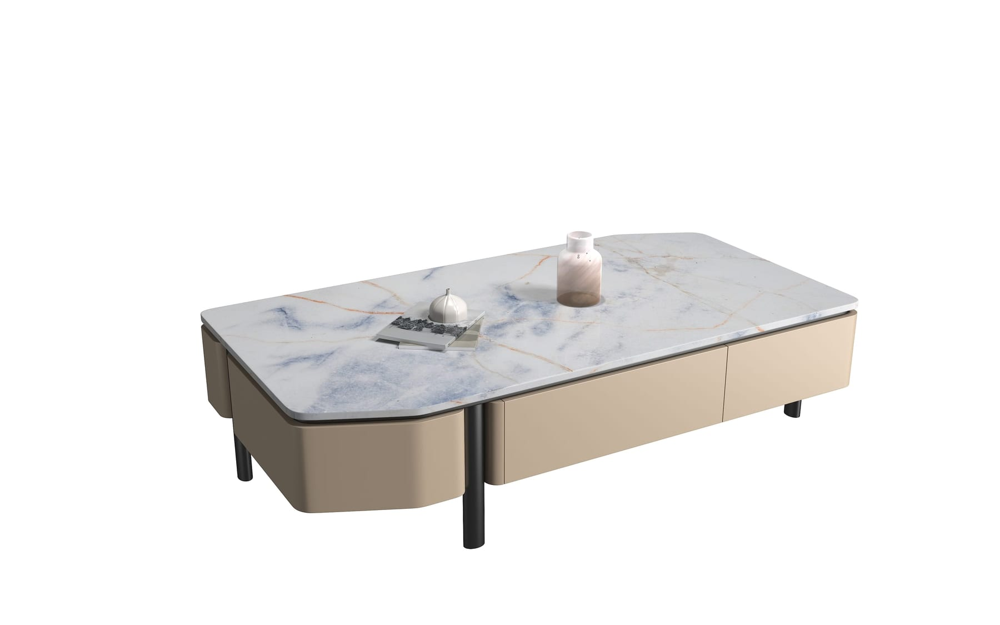
茶几地柜 C · 茶几
Coffee Table C大理石台面与金属细腿的茶几单品。A coffee table in marble on slim metal legs.
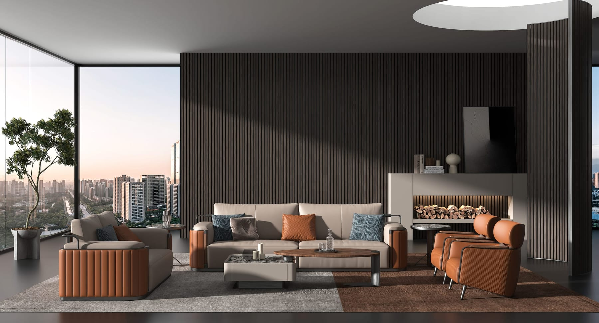
意式轻奢客厅 D 1
Italian Living Room D1意式轻奢语汇，皮革与金属的对比。Italian contemporary language — leather against metal.
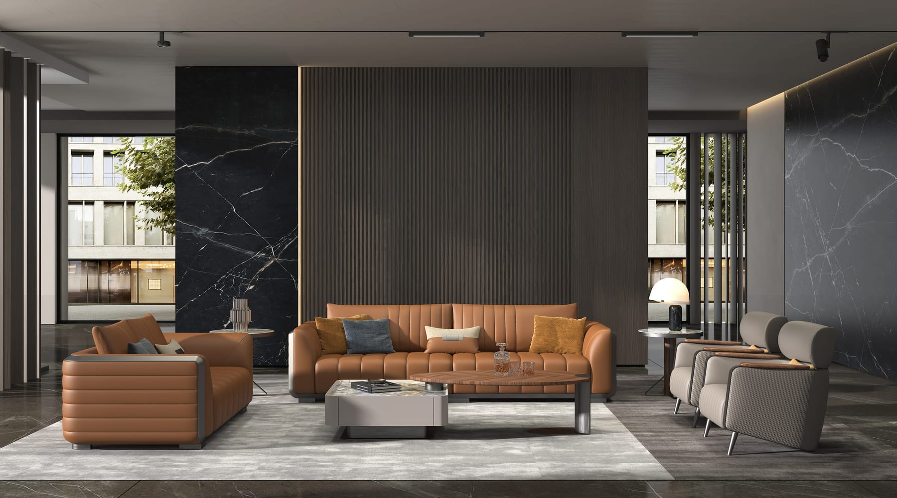
意式轻奢客厅 G
Italian Living Room G开敞式客厅，落地窗引入自然光。An open living room with floor-to-ceiling glazing.
客厅 B
Living Room B长条沙发与单人椅围合出会客区。A long sofa and lounge chairs enclose the seating area.
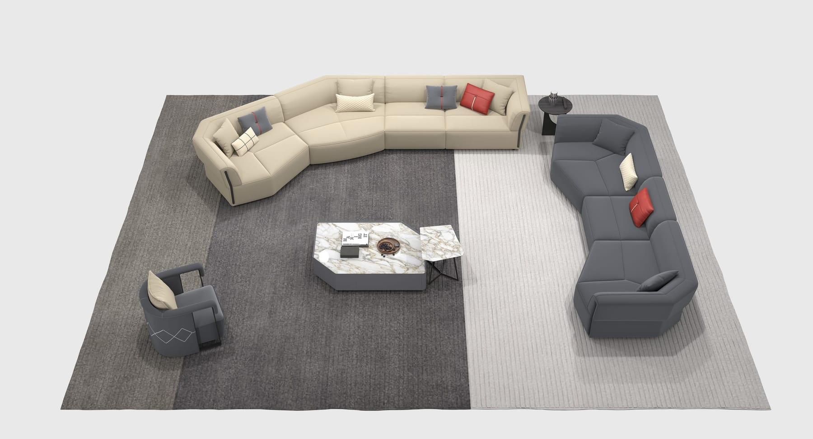
客厅 B 俯视
Living Room B · Aerial俯视角度，可见完整的家具平面关系。Aerial view showing the full furniture plan.
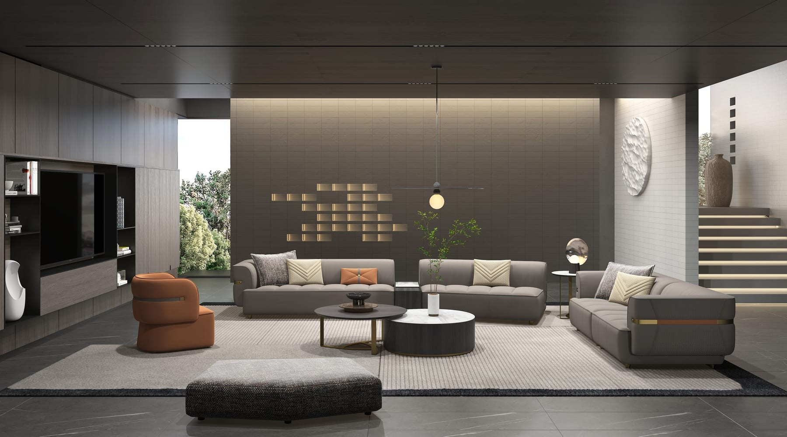
客厅 A
Living Room A客厅整体布局，低矮座面与深色木饰面形成层次。A full living-room composition — low seating against dark timber.
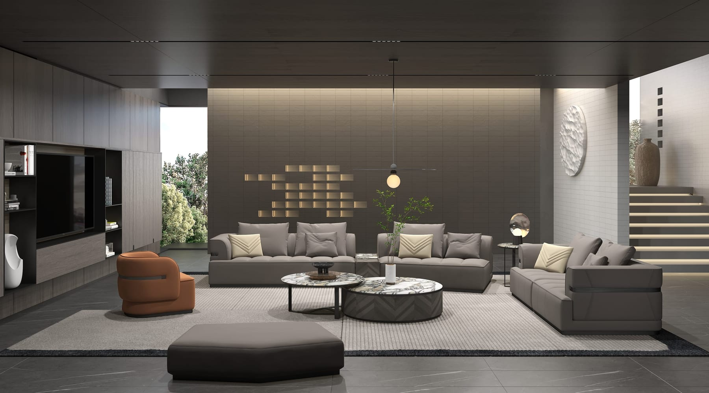
雅格斯丹 客厅 C
Yagestan · Living Room C雅格斯丹系列客厅方案，暖木与米色织物。The Yagestan living scheme in warm wood and ivory fabric.
茶室
Tea Room矮几、坐凳与器皿，为奉茶的仪式而设。 Low tables, stools and vessels for the ritual of tea.
01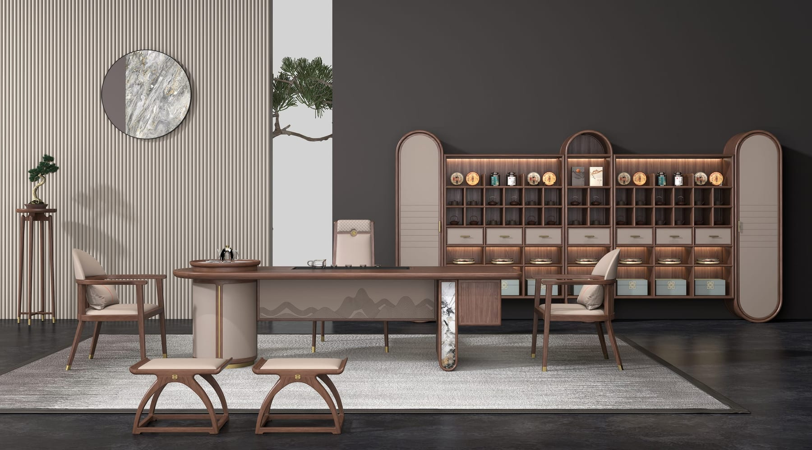
唐潮 茶室
Tangchao · Tea Room低几、坐凳与器皿，围绕奉茶的仪式展开。Low tables, stools and vessels for the tea ritual.
餐厅
Dining Room餐桌与座椅，围绕一餐饭的长度展开。 Tables and chairs built around the length of a meal.
02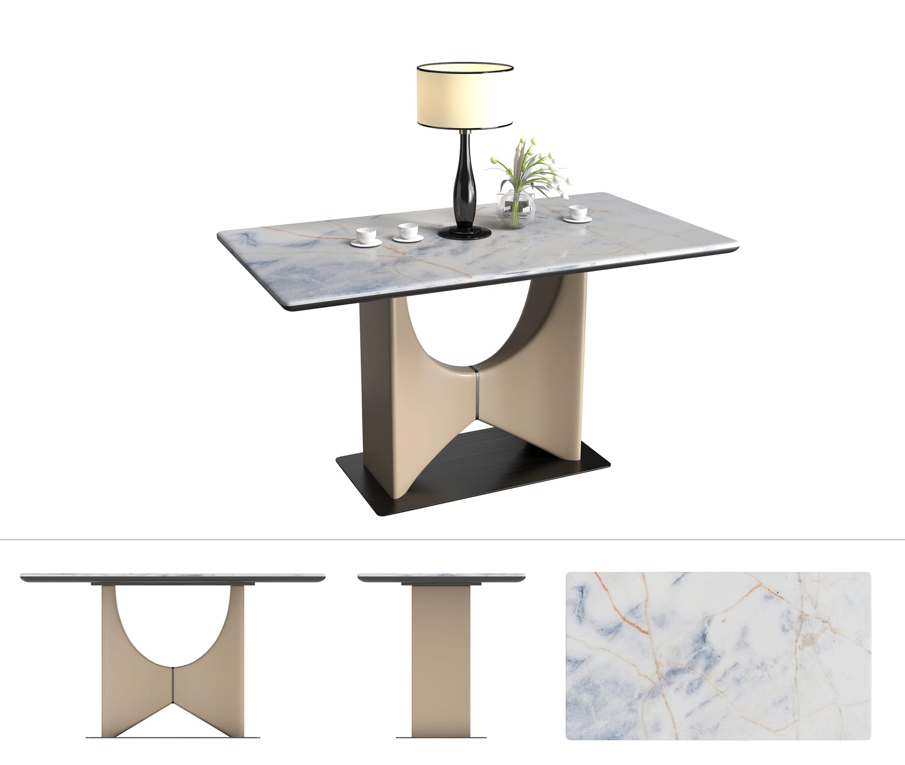
餐台 C · 1
Dining Table C · Detail餐台的另一视角，可见桌腿与地面的关系。Alternate view showing the leg-to-floor relationship.
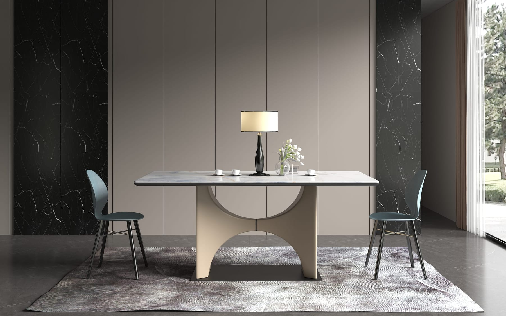
餐台 C
Dining Table C整块石材台面的餐台，配以木质底架。A dining table in solid stone on a timber base.
卧室
Bedroom睡眠所需的沉静：低床、软包与柔和的光。 The stillness sleep requires — low beds, soft edges, gentle light.
02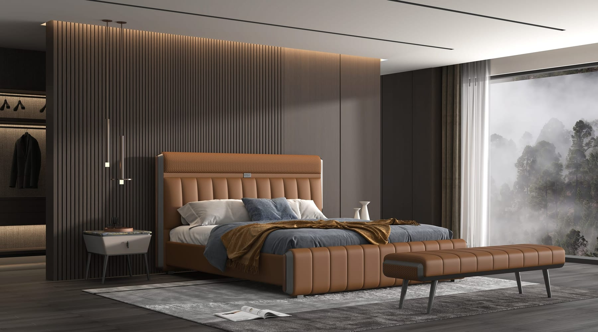
意式轻奢卧室 G
Italian Bedroom G低床与整墙木饰面，卧室的安静基调。A low bed against a full-height timber wall.
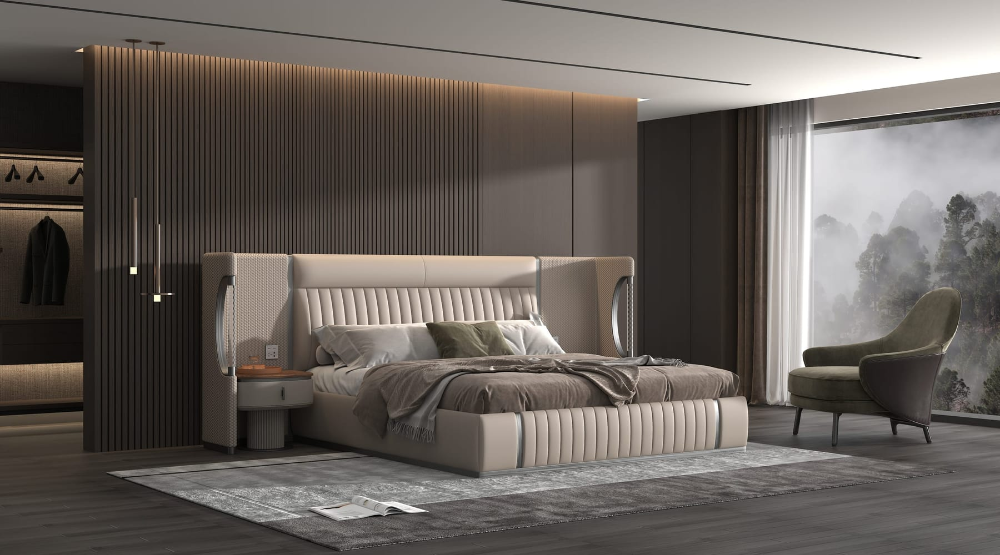
意式轻奢卧室 C 3
Italian Bedroom C3卧室方案，软包床头与浅色地毯。A bedroom scheme with an upholstered headboard.
单品
Single Items单独的椅子、几与柜，各自成篇。 A chair, a table, a cabinet — each complete on its own.
03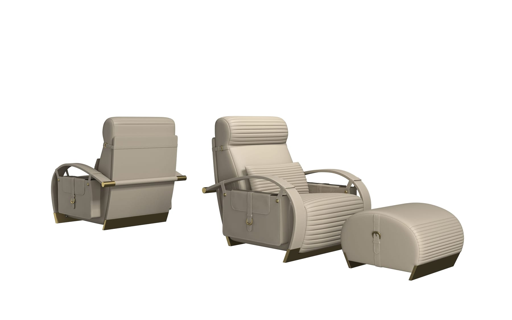
雅格斯丹 休闲椅 · 黄铜色
Yagestan Lounge Chair · Brass雅格斯丹休闲椅，黄铜色框架。The Yagestan lounge chair in a brass finish.
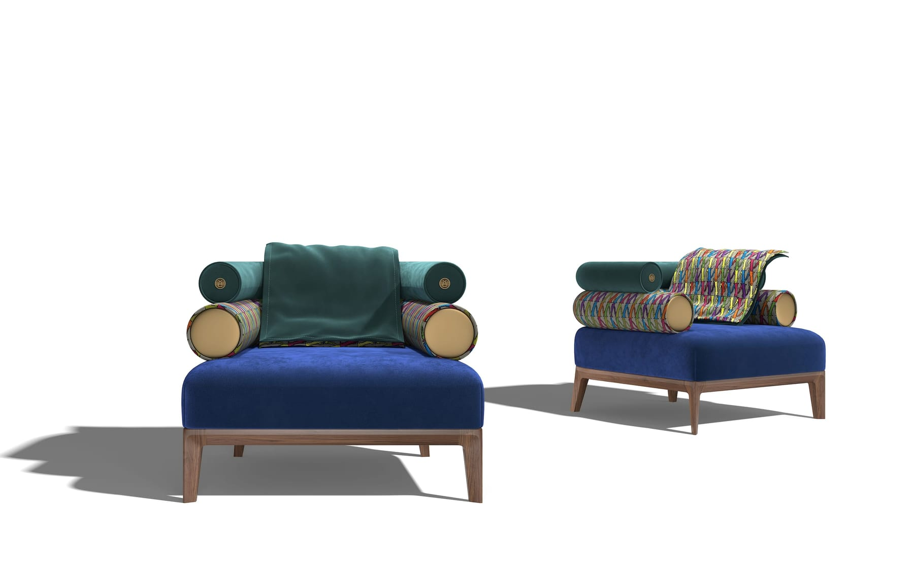
行草 休闲椅 2
Xingcao Lounge Chair · Detail休闲椅的侧面轮廓。Side profile of the lounge chair.
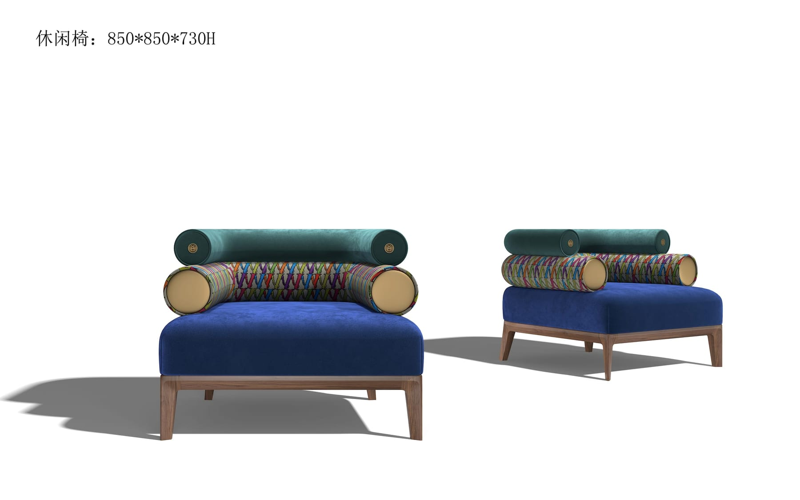
行草 休闲椅
Xingcao Lounge Chair行草系列休闲椅，黄铜与深色皮革。The Xingcao lounge chair in brass and dark leather.
其他
Others不属于以上分类的尝试与实验。 Experiments that sit outside the categories above.
01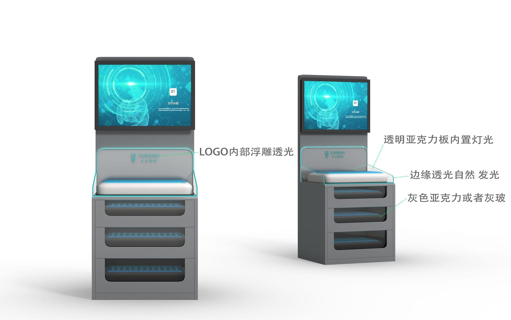
展示柜
Display Cabinet玻璃门展示柜，用于陈列器物。A glass-fronted display cabinet for objects.
关于我
About我设计为真实生活而存在的家具。每一件作品都从一个材料决定开始——一块板的厚度、一个接合、一道圆角——其余的一切都由此展开。 I design furniture for rooms that are lived in. Each piece begins with a single material decision — a board thickness, a joint, a radius — and everything else follows from it.
我在室内与家具的交界处工作。设计从材料开始，也从尺度开始：一件家具要先回应房间，才谈得上回应风格。木、石、金属与皮革，被放在一起是因为它们的触感与时间的痕迹，而不是因为它们时髦。
每个系列都从一张比例草图开始，然后做小样，再放大到实物。过程中不断回到最初的那个决定——板厚、接合、圆角——直到细节之间彼此说服。
好的家具不需要被解释。它只是安静地在那里，用很多年证明自己。 Good furniture doesn't need explaining. It simply sits there, quietly, proving itself over years.
Contact
询价与 项目合作。
Commissions & collaborations
+86 138 2874 8722接受定制与批量项目咨询。请附上空间平面与时间计划，我会在一个工作日内回复。 Custom and production enquiries welcome. Include plans and a timeline, and I'll reply within one working day.